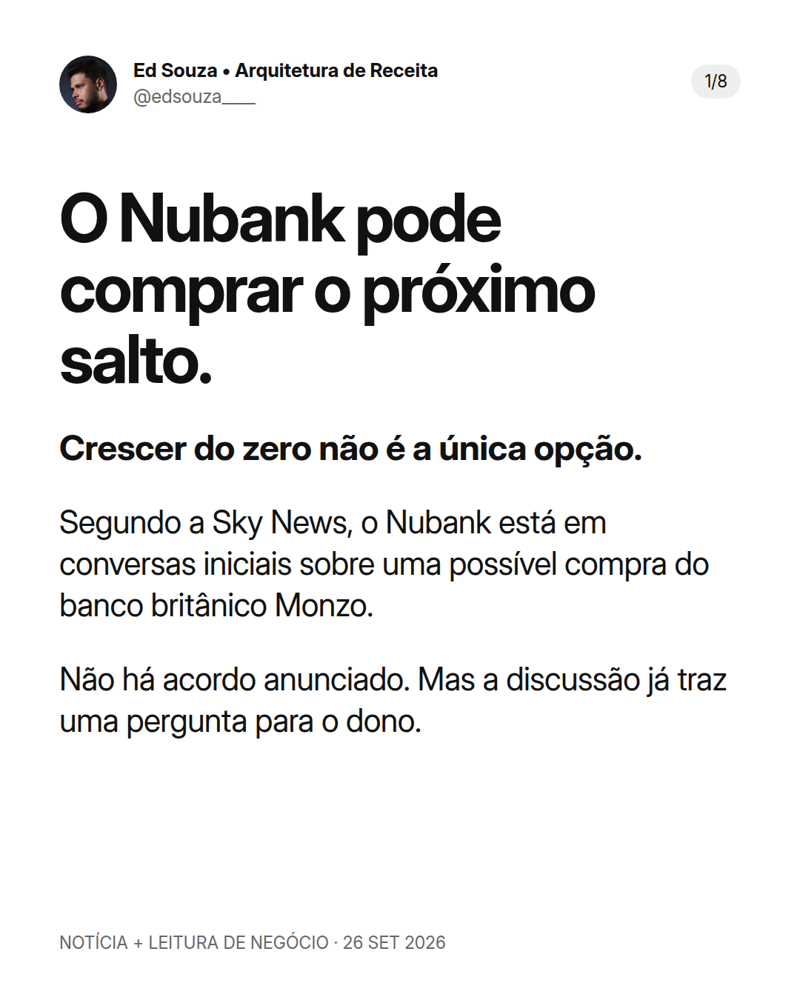

Legenda
O Nubank pode comprar o próximo salto. E a sua empresa: precisa construir tudo do zero? A Sky News noticiou em 26/09/2026 conversas iniciais sobre uma possível compra do Monzo pelo Nubank. A faixa de £8 bilhões a £10 bilhões é uma avaliação possível mencionada na reportagem — não um preço acordado. Não há aquisição anunciada. O Monzo também avalia uma nova rodada de investimento. O Nubank afirmou que não comenta rumores ou especulações, e o Monzo não comentou. Minha leitura de negócio começa depois desse cuidado com o fato: crescimento não se resume a colocar mais dinheiro no mesmo canal. Uma empresa pode construir distribuição, firmar parcerias ou avaliar aquisições. São caminhos diferentes, com custos e riscos diferentes. Para quem já tem uma operação validada, eu começaria com três perguntas: • Aquisição: quem já tem a confiança do cliente que você quer conquistar? • Produtos: qual próximo problema você pode resolver para quem já comprou? • Margem e LTV: quanto sobra depois de conquistar, atender e reter esse cliente? Mais acesso não garante mais lucro. Sem produto certo e capacidade de entrega, expansão só aumenta a complexidade. Hoje, o que mais limita o crescimento da sua empresa: aquisição, produtos ou margem? Te vejo no topo. Ed Souza | Arquitetura de Receita Fontes: Sky News, Mark Kleinman, 26/09/2026; Reuters, 26/09/2026, repercutindo a apuração da Sky News. Não são duas confirmações independentes. Análise estratégica de Ed separada da notícia.